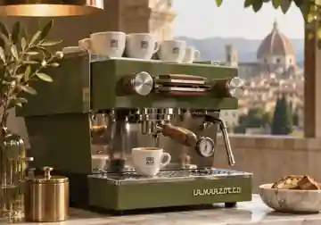

KontorKaffe
Caffè su invito
2.2

KontorKaffe
Caffè su invito
Barista · Logg inn
Fast servertilkopling · Ingen nettadresse trengst.
ORDRE
Bestillingar
Dagens spesial
Ingen spesial på menyen i dag
Gjeld fram til midnatt. Tidlegare bestillingar beheld den varianten kunden valde.
LAGERGRUNNLAG
Råvarer
Tal koppar basert på aktive medlemsklipp og bestillingar som ikkje er påbegynte. Klipp er ikkje eit nøyaktig mål på mjølk, bønner eller andre råvarer. Nye fornyingar kjem i tillegg.
MEDLEMMER · 08
Medlemskap
KORT
Medlemskort
Opprett kort under Medlemmer. Skriv ut eller lagra som PDF før du loggar ut. Av tryggleiksomsyn vert QR-koden ikkje lagra for ny utskrift. Erstatt kortet berre dersom det er mista. Åtte kort i bankkortformat (85,6 × 54 mm) får plass på eitt A4-ark. Skriv ut i faktisk storleik.
INNSTILLINGAR
Drift og varsling
Medlemsnettside
Aktiver den faste kundeadressa. Appen kontrollerer nettsida og opprettar varslingsnøklane.
For bakgrunnsvarsling: opna denne adressa med /admin/ i nettlesaren, logg inn og slå på telefonvarsling.
Ordrelyd verkar medan appen er open. For varsel når appen er lukka, opna baristapanelet i nettlesaren og slå på telefonvarsling.
KontorKaffe har eigen database og privat tilgang.